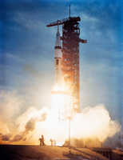
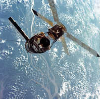

7/28/1973SearchSkylab 3 Launch: On July 28, 1973, Skylab 3 launched from the Kennedy Space Center for a 2 month mission in Skylab, America’s first space station. The crew included Commander Alan Bean, Pilot Jack Lousma, and Scientist Owen Garriott. The three men continued maintenance of the space station that was started by Skylab I. They also performed scientific and medical experiments, and conducted 3 spacewalks. The mission doubled the record for time spent in space, previously set by Skylab 2. (NASA on The Commons)Skylab 3 Close-Up: A closeup view of the Skylab space station photographed against an Earth background from the Skylab 3 Command/Service Module during station keeping maneuvers prior to docking. The Ilba Grande de Gurupa area of the Amazon River Vally of Brazil can be seen below. Aboard the command module were astronauts Alan L. Bean, Owen K. Garriott, and Jack R. Lousma, who remained with the Skylab space station in Earth's orbit for 59 days. This picture was taken with a hand-held 70mm Hasselblad camera using a 100mm lens and SO-368 medium speed Ektachrome film. Note the one solar array system wing on the Orbital Workshop (OWS) which was successfully deployed during axtravehicular activity (EVA) on the first manned Skylab flight. The parasol solar shield which was deployed by the Skylab 2 crew can be seen through the support struts of the Apollo Telescope Mount.